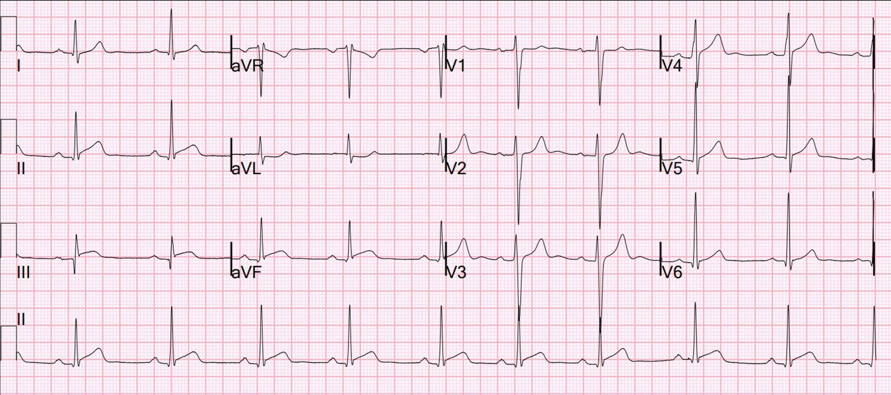
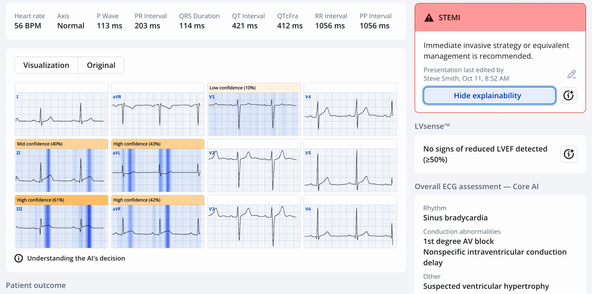
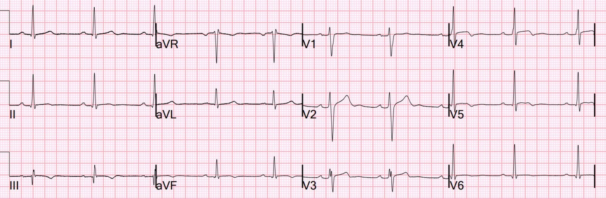
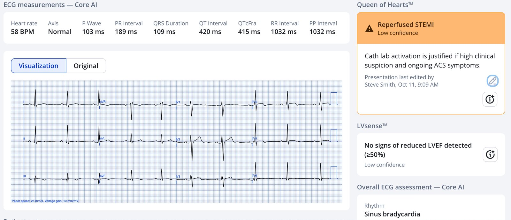
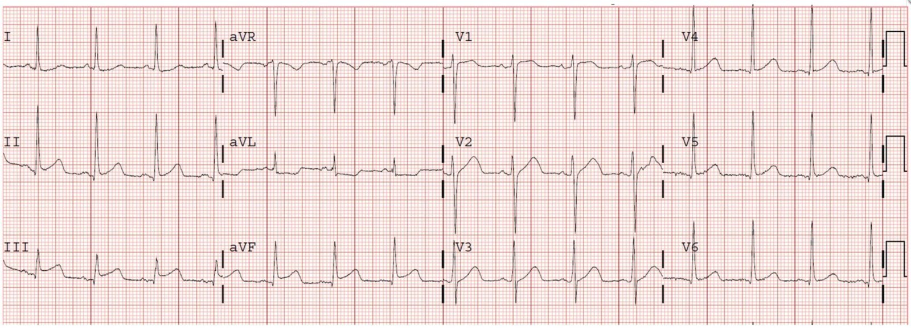
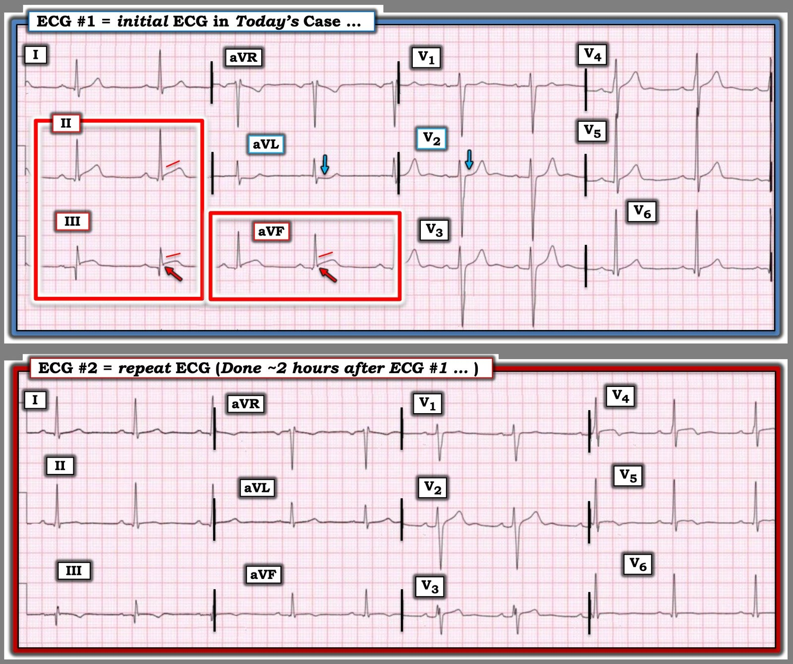

15/10/2025 — Bệnh nhân 24 tuổi đau ngực — Chuyện gì đã xảy ra?
Bản dịch tiếng Việt của bài "A 24 year old with chest pain — What happened?" – Dr. Smith’s ECG Blog. Giữ nguyên toàn bộ 6 hình ảnh của bản gốc.


Ca này được viết bởi một trong những bác sĩ nội trú Cấp cứu/Nội khoa (EM/IM) xuất sắc của chúng tôi, Emily Syverud.
Một nam giới 24 tuổi đến khoa cấp cứu (ED) vào sáng sớm vì đau ngực kiểu nóng rát, khởi phát đột ngột vào tối hôm trước khi đang xem TV; anh cũng kể có buồn nôn và nôn kèm theo. Trước đó, vào buổi tối, anh đã chơi bóng đá mà hoàn toàn không hề đau ngực. Một tuần trước anh bị một bệnh kiểu nhiễm trùng hô hấp trên (URI), nay đã khỏi. Đây là điện tâm đồ ban đầu của anh:

Bạn nghĩ gì?
Kết quả đọc bằng máy tính thông thường (Veritas) như sau:
NHỊP CHẬM XOANG KÈM LOẠN NHỊP XOANG
ST CHÊNH LÊN PHÙ HỢP VỚI TỔN THƯƠNG, VIÊM MÀNG NGOÀI TIM HOẶC TÁI CỰC SỚM
Nhưng kết luận cuối cùng đã được bác sĩ sửa lại thành:
NHỊP CHẬM XOANG KÈM LOẠN NHỊP XOANG
Thay đổi ST không đặc hiệu, chênh lên vùng dưới.
Emily viết như sau:
Có ST chênh lên (STE) ở các chuyển đạo II, III và aVF kèm ST chênh xuống (STD) soi gương ở aVL, có giá trị chẩn đoán OMI. Nhóm điều trị đã nhận ra đây là bất thường, nhưng lại mô tả là thay đổi ST không đặc hiệu. Troponin độ nhạy cao (hs-troponin) ban đầu của anh là 248 ng/L. Do tuổi của bệnh nhân và các triệu chứng URI trước đó, họ lo ngại viêm màng ngoài tim (điều này gợi nhớ một trong những câu nói nổi tiếng của Dr. Smith: “chẩn đoán viêm màng ngoài tim là tự chuốc lấy hiểm họa”). Họ làm siêu âm tim tại giường, không thấy rối loạn vận động thành nào đáng kể. Vì có phần lo ngại hội chứng vành cấp (ACS), họ cho bệnh nhân liều nạp aspirin và quyết định theo dõi diễn biến troponin và ghi lại điện tâm đồ.
Smith: Đây là OMI thành dưới ĐANG DIỄN RA!! Cần kích hoạt phòng thông tim ngay lập tức chỉ dựa vào điện tâm đồ, không chờ troponin!!
Gần như không bao giờ có ST chênh xuống soi gương trong viêm màng ngoài tim, như ở aVL trong ca này. Chúng tôi đã chứng minh điều này từ nhiều năm trước trong nghiên cứu sau: ST depression in lead aVL differentiates inferior ST-elevation myocardial infarction from pericarditis (ST chênh xuống ở chuyển đạo aVL giúp phân biệt nhồi máu cơ tim ST chênh lên thành dưới với viêm màng ngoài tim)
Tuy nhiên, viêm cơ tim có thể giống OMI gần như hoàn hảo, và thực sự có thể có ST chênh xuống soi gương. (Hơn nữa, nếu đây là tình trạng viêm (viêm cơ-màng ngoài tim), thì đó là viêm cơ tim (chứ không phải viêm màng ngoài tim) nếu troponin tăng.)
Đây là chẩn đoán của mô hình AI Queen of Hearts của PMCardio (dĩ nhiên cô ấy chẩn đoán OMI (tương đương STEMI = OMI)).


PMcardio for Individuals nay đã có mô hình Queen of Hearts mới nhất, khả năng giải thích của AI (bản đồ nhiệt màu xanh) và %phân suất tống máu thất trái. Tải ngay cho iOS hoặc Android: https://individuals.pmcardio.com/app/promo?code=DRSMITH20. Là thành viên cộng đồng của chúng tôi, bạn có thể dùng mã DRSMITH20 để được giảm giá độc quyền 20% cho năm đầu tiên của gói đăng ký hằng năm. Tuyên bố miễn trừ: PMcardio đã được chứng nhận CE để lưu hành tại Liên minh châu Âu và Vương quốc Anh. Công nghệ PMcardio chưa được Cục Quản lý Thực phẩm và Dược phẩm Hoa Kỳ (FDA) cấp phép sử dụng lâm sàng tại Hoa Kỳ.
Ca bệnh tiếp diễn, do Emily viết:
Troponin của anh tiếp tục tăng, lần đo lại sau 2 giờ tăng lên 601. Sau đó ghi lại điện tâm đồ:


Smith: bản ghi này cho thấy tái tưới máu của OMI thành dưới. ST chênh lên đã hết và sóng T đã đảo ngược. Còn có sóng T đảo ngược ở V4-6, cho chúng ta biết đây cũng là một vùng nhồi máu mà tôi đã không nhận ra, và Queen cũng không!! Nếu bây giờ bệnh nhân hoàn toàn hết đau ngực, thì việc thông tim ngay lập tức bớt khẩn cấp hơn nhiều.
Queen nhận biết được tái tưới máu:


Emily viết tiếp:
ST chênh lên ở II, III và aVF vẫn còn, dù không rõ như trước. Bây giờ anh có ST chênh lên ở V3-V5 và sóng T đảo ngược (TWI) mới ở các chuyển đạo dưới và bên. Với các thay đổi động và troponin tăng dần, khoa tim mạch được mời hội chẩn. Họ khai thác thêm bệnh sử, trong đó bệnh nhân mô tả cơn đau có thể có yếu tố thay đổi theo tư thế và kiểu màng phổi.
Theo kinh nghiệm của tôi, nếu một bác sĩ tim mạch không thể tin rằng một người 24 tuổi bị nhồi máu cơ tim, họ sẽ diễn giải bệnh sử sao cho khớp với định kiến đó. Vì vậy tôi không tin rằng cơn đau ngực thay đổi theo tư thế và/hoặc có tính chất màng phổi.
Điều này, cùng với tuổi trẻ và việc không có yếu tố nguy cơ, khiến họ cũng kết luận rằng viêm cơ tim hoặc viêm cơ-màng ngoài tim là khả năng cao nhất, mặc dù đã ghi nhận troponin tăng dần, thay đổi điện tâm đồ động và có thể có rối loạn vận động thành trên siêu âm tim qua thành ngực (TTE) chính thức. Họ có khuyến nghị bắt đầu truyền heparin liên tục vì chưa loại trừ được ACS. Họ khuyến nghị chụp CT mạch vành (CTCA) để đánh giá các động mạch vành.
_______
Smith: Viêm cơ tim là có thể với điện tâm đồ ban đầu này, tuy nhiên, bạn không thể phân biệt OMI với viêm cơ tim bằng troponin hay rối loạn vận động thành. Viêm cơ tim cũng sẽ có troponin tăng dần. Nó cũng sẽ có rối loạn vận động thành. Cách duy nhất để phân biệt trong tình huống CẤP CỨU là chụp mạch vành.
Hơn nữa, viêm cơ tim không cho hình ảnh tái tưới máu NHANH (giảm đau, ST chênh lên thoái lui và sóng T đảo ngược). Viêm cơ tim diễn tiến âm ỉ hơn, và sự thoái lui không nhanh như vậy.
Vậy còn cách nào khác để chẩn đoán viêm cơ tim? Nếu không có tổn thương thủ phạm trên chụp mạch vành, đó vẫn có thể là MINOCA (nhồi máu cơ tim không tắc nghẽn động mạch vành). Bác sĩ can thiệp có thể xác minh nhồi máu cơ tim típ 1 (nứt vỡ mảng xơ vữa) bằng chụp cắt lớp quang học (OCT) hoặc siêu âm trong lòng mạch (IVUS). Nếu không tìm thấy, thì khả năng là viêm cơ tim hoặc nhồi máu cơ tim típ 2. Để phân biệt hai bệnh này, cần chụp MRI. Các dấu ấn viêm cũng hữu ích.
___________
Vì lúc này đã là giờ làm việc ban ngày, CTCA được thực hiện tương đối nhanh và ghi nhận hẹp nặng LAD. Đến lúc này tôi đến khai thác bệnh sử với tư cách thành viên nhóm tiếp nhận nhập viện, và đã lo lắng khi anh nói với tôi rằng cơn đau ngực đã đỡ nhiều, chỉ còn 1/10 so với 8/10 lúc mới đến.
Với cơn đau ngực vẫn còn và kết quả CTCA, tôi rất lo ngại thiếu máu cục bộ đang tiếp diễn – một điều khác mà Steve Smith đã dạy tôi là đau 1/10 vẫn là đau kháng trị và cần PCI khẩn cấp hơn! Tôi đã trao đổi với nhóm cấp cứu phụ trách anh; họ bắt đầu truyền nitroglycerin liên tục, và khi việc đó không làm hết đau ngay, họ đã hội ý với khoa tim mạch, và khoa tim mạch đồng ý đưa anh đi chụp mạch vành.
Chụp mạch vành cho thấy tổn thương thủ phạm ở đoạn giữa LAD kèm thuyên tắc xuống phần LAD “vòng qua mỏm” (wraparound), giải thích các dấu hiệu thành dưới trên điện tâm đồ. Siêu âm trong lòng mạch (IVUS) được dùng để xác định đặc điểm tổn thương do bệnh nhân còn trẻ và không có bất kỳ yếu tố nguy cơ ACS nào; tổn thương KHÔNG mang đặc điểm của bóc tách động mạch vành tự phát (SCAD) và cho thấy mảng xơ vữa nứt vỡ thực sự. Anh được can thiệp mạch vành qua da (PCI) với stent phủ thuốc (DES) và hút huyết khối ở LAD. Xét nghiệm không cho thấy rối loạn lipid máu, vì vậy hiện anh đang được đánh giá tình trạng tăng đông như một nguyên nhân gây xơ vữa động mạch. Anh chưa được làm lại TTE kể từ khi PCI, nhưng chưa có bất kỳ dấu hiệu hay triệu chứng lâm sàng nào của suy tim.
Ca này là một lời nhắc quan trọng với tôi rằng OMI có thể xảy ra ở bất kỳ bệnh nhân nào, kể cả những người không có yếu tố nguy cơ rõ ràng. Tuổi trẻ của người đàn ông này và các triệu chứng URI “đánh lạc hướng” (red herring) đã khiến những thầy thuốc thực sự xuất sắc giải thích cho qua các triệu chứng, xét nghiệm và dấu hiệu điện tâm đồ mà nhiều khả năng đã dẫn tới can thiệp khẩn cấp hơn ở một bệnh nhân lớn tuổi hơn. May mắn cho chàng trai trẻ này, anh vẫn tiếp tục hồi phục tốt.
Troponin cao nhất đo được là 7500 ng/L, nhưng không được đo tới đỉnh.
Smith: Tôi luôn nói rằng nếu bị nhồi máu cơ tim, điều tồi tệ thứ hai là bạn là một người đàn ông trẻ. Điều tồi tệ nhất là bạn là một phụ nữ trẻ.
24 yo woman with chest pain the morning after binge drinking: Is it Pericarditis? (Phụ nữ 24 tuổi đau ngực vào buổi sáng sau một đêm uống rượu quá chén: Có phải viêm màng ngoài tim?)


Tôi đã kích hoạt phòng thông tim cho bệnh nhân này và 5 bác sĩ tim mạch đã xuống khoa cấp cứu và tuyên bố đó là “viêm màng ngoài tim”. Họ làm siêu âm tim và thấy nhiều vùng rối loạn vận động thành. Chỉ khi đó họ mới đưa cô vào phòng thông tim. Đây cũng là một LAD vòng qua mỏm, nhưng bị tắc ở đoạn gần: vì vậy cả thành trước, thành dưới và thành bên đều bị đe dọa.
Đừng bỏ lỡ ca này và một ca tồi tệ khác ở bài này: A teenager with chest pain, a troponin below the limit of detection, and “benign early repolarization” (Một thiếu niên đau ngực, troponin dưới ngưỡng phát hiện, và “tái cực sớm lành tính”)
Đây là một ví dụ hay về viêm cơ tim giống OMI: A Young Woman with Chest Pressure and Subtle, Focal ST Elevation/Depression (Một phụ nữ trẻ có cảm giác đè nặng ngực và ST chênh lên/chênh xuống khu trú, kín đáo)
= = =
======================================
BÌNH LUẬN CỦA TÔI, bởi KEN GRAUER, MD (15/10/2025):
Suy nghĩ của tôi khi xem điện tâm đồ ban đầu của ca hôm nay đơn giản là: Khi điện tâm đồ đáng lo ngại ==> Hãy tin điện tâm đồ cho tới khi chứng minh được điều ngược lại!
- Hoàn toàn dễ hiểu khi các thầy thuốc có thể nghi ngờ khả năng một nam giới 24 tuổi năng động, trước đây khỏe mạnh, mới bị URI gần đây lại đột ngột đến khoa cấp cứu vì nhồi máu cơ tim cấp — nhưng điện tâm đồ ban đầu (mà tôi đã đưa lại bên dưới trong Hình 1) của anh lại nói điều ngược lại. Trong những trường hợp như vậy — chúng ta cần chứng minh rằng điện tâm đồ sai, chứ không phải ngược lại.
- Và, khi Troponin ban đầu cũng tăng đáng kể ==> Chúng ta cần xác định TẠI SAO …
= = =
Những bài học cần rút ra từ ca hôm nay đã được các bác sĩ Syverud và Smith nêu bật một cách thuyết phục. Trong số đó:
- OMI cấp có thể xảy ra ở bất kỳ bệnh nhân nào, kể cả nam giới trẻ tuổi trước đây khỏe mạnh.
- Viêm màng ngoài tim cấp thực sự rất hiếm — nhất là khi điện tâm đồ trông giống OMI cấp hoặc viêm cơ tim hơn nhiều.
- Tuổi trẻ của bệnh nhân hôm nay, tiền sử bệnh không có gì đáng chú ý và troponin ban đầu tăng cộng lại khiến về mặt thống kê nghiêng về viêm cơ tim cấp hơn là OMI. Dù vậy, theo bác sĩ Smith — viêm cơ tim cấp có thể bắt chước hoàn hảo các dấu hiệu lâm sàng của OMI, đến mức cách duy nhất để phân biệt cấp thời giữa 2 bệnh lý này là thông tim.
= = =
2 điện tâm đồ trong CA BỆNH hôm nay:
Để dễ so sánh, trong Hình 1 — tôi đã đặt 2 điện tâm đồ của ca hôm nay cạnh nhau.
- Điện tâm đồ ban đầu của ca hôm nay không gợi ý viêm màng ngoài tim cấp vì: i) ST chênh lên khu trú ở các chuyển đạo dưới — thay vì lan tỏa, như lẽ ra phải thấy trong viêm màng ngoài tim cấp; — ii) Hình dạng sóng ST-T ở chuyển đạo II trông giống ở chuyển đạo III, và hoàn toàn không giống hình dạng ở chuyển đạo I (trong khi điều ngược lại thường đúng với viêm màng ngoài tim cấp); — iii) Viêm màng ngoài tim cấp không tạo ra ST chênh xuống soi gương — trong khi dấu hiệu vô giá này hiện diện rõ ràng ở chuyển đạo aVL; — và, iv) Tỷ lệ ST/sóng T ở chuyển đạo V6 bình thường (tức là, ST chỉ chênh lên rất ít ở chuyển đạo V6 so với sóng T cao hơn nhiều ở chuyển đạo này). — (Xem Bình luận của tôi ở cuối trang trong bài ngày 7 tháng Chín năm 2025 để ôn lại các dấu hiệu điện tâm đồ của viêm màng ngoài tim cấp.)
Thay vào đó — điện tâm đồ ban đầu của ca hôm nay gợi ý mạnh mẽ OMI cấp:
- Ở một bệnh nhân có CP (đau ngực) mới xuất hiện — “mắt” tôi lập tức bị thu hút bởi đoạn khởi đầu ST thẳng đuỗn, đi kèm ST chênh lên rõ ràng ở từng chuyển đạo dưới (trong các hình chữ nhật ĐỎ).
- Ngoài ra — có sóng Q ở từng chuyển đạo dưới, trong đó sóng Q ở chuyển đạo III sâu một cách đáng ngạc nhiên so với biên độ sóng R khiêm tốn ở chuyển đạo này. Và mặc dù sóng Q ở chuyển đạo dưới không nhất thiết là dấu hiệu bất thường — nhưng ít gặp hơn nhiều khi thấy sóng Q như vậy lúc trục mặt phẳng trán tương đối nằm ngang, như ở điện tâm đồ #1.
- ST chênh xuống soi gương hiện diện rõ ràng ở chuyển đạo aVL (mũi tên XANH ở chuyển đạo này).
- OMI thành sau cấp cũng được gợi ý trên điện tâm đồ #1 — vì mất đi đoạn ST chênh lên nhẹ, hơi lõm hướng lên vốn bình thường thấy ở cả hai chuyển đạo V2 và V3 (Lưu ý rằng đoạn ST chênh lên dốc lên nhẹ nhàng này có ở chuyển đạo V3 — trong khi đoạn ST ở chuyển đạo V2 thì phẳng và đẳng điện!).
- T.B. (P.S.): Điểm cuối cùng tôi muốn lưu ý là gợi ý có T-QRS-D (biến dạng phần cuối QRS) ở các chuyển đạo III và aVF. Xin nhấn mạnh rằng ý nghĩa chẩn đoán của dấu hiệu này ở các chuyển đạo dưới là chưa chắc chắn — tuy nhiên, nó có xuất hiện ở đây cùng với các dấu hiệu OMI thuyết phục khác (Xem Bình luận của tôi trong bài ngày 14 tháng Mười Một năm 2019 để biết thêm về T-QRS-D).
= = =
Hình 1: 2 điện tâm đồ trong ca hôm nay.


= = =
Điện tâm đồ ghi lại trong CA BỆNH hôm nay:
Đáng chú ý — điện tâm đồ ban đầu trong ca hôm nay dường như không được ghi lại cho tới khi đã qua ~2 giờ (và khi đó, có vẻ là do troponin tăng). Ở một bệnh nhân đến viện với CP dữ dội, mới xuất hiện (được bệnh nhân này đánh giá 8/10 khi đến khoa cấp cứu) mà còn chưa chắc chắn liệu có OMI cấp đang diễn ra hay không — không được để quá 15-20 phút trước khi ghi lại điện tâm đồ ban đầu. Làm như vậy có thể đã giúp đẩy nhanh việc thông tim trong ca hôm nay.
- So sánh giữa các điện tâm đồ liên tiếp dễ thực hiện nhất khi 2 bản ghi được đặt cạnh nhau, như trong Hình 1.
- Sóng Q vẫn giữ nguyên kích thước ở chuyển đạo III nay trông càng giống sóng Q nhồi máu hơn, bên cạnh sóng R nhỏ và sóng T đảo ngược phần cuối.
- Mức độ bất thường của đoạn ST thẳng đuỗn ở từng chuyển đạo dưới trên điện tâm đồ ban đầu — nay trở nên rõ ràng khi so sánh với sự xẹp xuống và thay đổi hình dạng sóng ST-T trên điện tâm đồ #2.
- Lưu ý rằng sóng S nay đã xuất hiện trở lại ở chuyển đạo III và aVF (trong khi chúng không có trên điện tâm đồ #1).
- ST dẹt và chênh xuống soi gương ở chuyển đạo aVL nay đã hết hoàn toàn.
- Đoạn ST dẹt đẳng điện ở chuyển đạo V2 không còn thấy trên điện tâm đồ ghi lại.
- Cuối cùng (theo các bác sĩ Syverud và Smith) — sóng T tái tưới máu (đi kèm với CP đã cải thiện nhưng chưa hết hoàn toàn) nay thấy ở nhiều chuyển đạo (sóng T đảo ngược ở các chuyển đạo III,aVF; V3,V4,V5 — cùng với ST dẹt ở chuyển đạo II và V6, có lẽ đang chuyển dần sang sóng T đảo ngược nếu xét hình dạng trước đó của chúng trên điện tâm đồ #1).
= = =